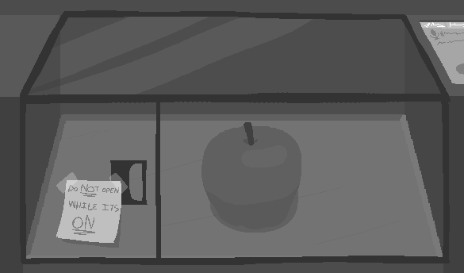
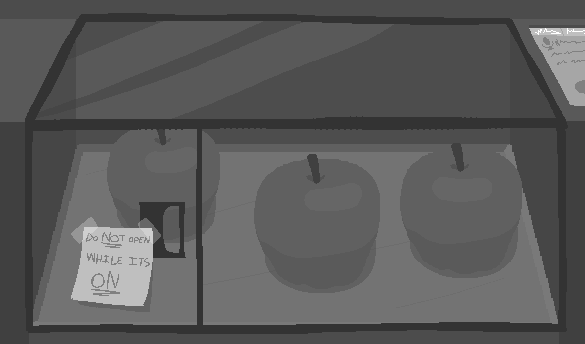
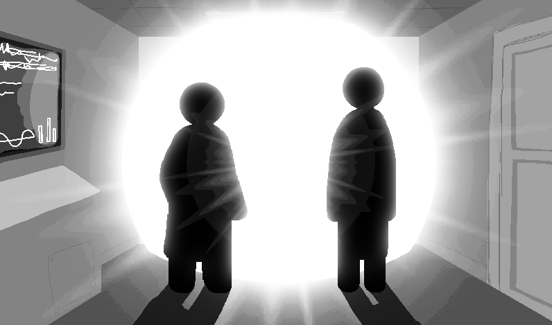

"Lab 13"
a: Yeah. So lab 11, that's industrial chemistry, lab 12 is kinda similar but leaning more into biological stuff.
a: Then we got... lab 14 which is... meta materials. They make like stronger concrete, metals, that type of stuff over there.
narrator: ...
b: ...so you're just gonna skip lab 13 like that.
a: D'oh, c'mon man, take a hint. I don't wanna talk about lab 13 right now.
b: Well you wanted to talk about the labs in the first place!
a: Do not-
b: And by intentionally skipping it, you've only made me more curious.
a: No.
a: I am not doing this.
b: Yes you are.
a: No, I am not.
narrator: ...
b: I'm not changin' my mind.
b: Your move.
a: Argh FINE. I hate how easily you get on my nerves.
one: Hey come check this out
two: Whuh-h-hold on. Need to unpack this thing.
two: ...
two: Okay yeah, what is it.
one: This thingamajig, is called a Mister Rap. It can-
two: Why do they call it that.
one: ...it's an M R R A P. Short for Matter Reconstructor and Realistic Arithmatics Potentiator.
one: The lab boys definitely had some fun naming this baby.
two: What does it do.
one: I've been told it does something very special.
one: Apparently, this thing can "reconstruct" matter into its main chamber.
two: I have many questions.
one: If- I'm getting to it my guy. If you would just let me talk.
two: Okay.
one: They told me the Rap uses some quantum something-or-other that I didn't listen much about- to transport chunks of matter into this little compartment here.
two: Okay.
one: Now, this isn't creating matter, as you know. It's just grabbing it from somewhere else.
two: Oh cool. Teleporter.
one: ...not what I said. No.
one: Okay yeah, it might be a teleporter, but not in that sense.
one: You see this little door here?
two: Yeah.
one: Can be opened. Quite easily too. You see that.
one: When this thing is active, this door cannot be open. I don't mean like we should keep it closed, which we definitely should, I mean it gets ultra closed and bolted and locked up automatically. This thing is no joke.
two: Uh huh.
two: Why.
one: I don't think I have to tell you why the door should be closed when this thing is moving matter to and fro god knows where.
two: Air could be displaced. Or your hand.
one: Heh, yeah! You get it.
two: So if it's not a teleporter in that sense, then what. Does it do.
one: You remember what the Rap part means?
two: Reconstruct... Uh.
one: Realistic Arithmatics Potentiator. Fancy way of saying "reality calculator".
two: I am interested.
one: Sure you are. Me included.
one: It can bring objects, but what good does that do us?
one: Well, some chemicals are hard to transport, manipulate, and keep next to other dangerous chemicals for extended periods of time. This bad boy lets us test those chemicals easily. By-
two: By transporting them.
one: Exactly.
two: I get it now.
two: Hmm, what if theres no... let's say... crucible filled with molten gold in the world right now.
one: That's where it gets interesting. The object doesn't need to exist for it to be brought here.
two: Huh
one: They told me it can grab individual molecules from different parts of the world. So that means that, if those molecules exist somewhere, it can funnel them all into this here chamber.
one: Actually, they didn't specify "the world"... So I guess it could be from... space. I guess.
one: Once we're finished, the Rap returns all the molecules to their original places. Or, at least, whichever ones it can. I think.
one: Cool ey?
two: Yes. Very cool.
one: Now, the lab boys said we only needed to test simple objects. No chemical vials for now.
one: There should be this terminal over... Yep, here it is.
two: Pretty.
one: And they told me that they pre-loaded some object schematics onto it. Let's see what they got in store.
narrator: ...
two: Apple
one: Oh, yeah you're right! That's an apple right there.
two: Look, you can move it in 3D. With your finger. Very nice.
one: Ah dude look, they even got a voice feature? How cool is that!
two: Very.
one: Alright, we've gawked at the interface long enough. Let's take it for a spin.
narrator: ...
narrator: BEEP
narrator: BEEP
narrator: Voice mode activated.
one: So I should be able to just talk to this thing.
one: ...
one: One apple.
narrator nervous: WRRMMMMMMMM
narrator: CLACK

two: Woah. Apple.
one: Yeah! That was quick.
two: So did it create the apple. Or did it grab the molecules to make an apple.
one: Uhh, hm.
one: Apples are pretty common, and they're all made mostly of the same stuff, right?. I'd say it chose the nearest apple or two and grabbed molecules from those, you think?
two: Maybe.
two: Wait, we are-
one: I'll try the arithmetic.
one: One plus one apple.
narrator nervous: WRRRMMMMMMMMM
one: Let's see.
narrator: C-CLACK

one: Oh wow, those look identical.
one: Probably the schematic doin' its job.
two: ...hm.
two: I wanna try.
one: Go ahead.
two: Three apples minus-
two: ...
two: plus negative one apple
narrator: ...
narrator nervous: WRRMM
narrator: ...
narrator nervous: BWRRRMMMMMMMGG
one: Wait did you say negative-

a: They reclassified the area as a biological death zone, on the account of the massive amounts of radiation. And the crater.
a: Luckily lab 13 was in the middle of nowhere, and the fallout stayed pretty much in the same place.
a: They covered it up as a "routinary nuclear weapons test" but obviously people were skeptical and just attracted unwanted attention. When was the last nuclear weapon detonated? ...120 years ago was it?
b: I'unno.
b: Wait, how do we know what actually happened if the lab was completely obliterated?
a: Every lab has a black box feature- actually, lab 13 D used the backup relay system. It broadcasted-
b: W-wait wait, D? Lab 13 D?
a: Yeah. Oh, did I not...
a: Right. This was lab 13 D, the fourth of its series.
b: What, the others also blew up?
a: Well, no... They were decomissioned one way or another though.
b: Tell me aaaaall about them.
a: Dude, no. I just finished talking about lab D. I'm not doing this again.
b: Can you at least tell me how each one got "decomissioned"?
a: ...
a: Ugh.
a: Lab A lost all communication with other labs for a month. Communication suddenly came back up, but the only thing being transmitted were these... strange tones.
a: They sent a couple teams over to investigate, but all backed down just before entering the local area, saying they felt "uneasy". The lab was deemed lost after that.
b: Weird.
a: Lab B just... crumbled. Probably the cheap building material they used, most likely because they didn't really wanna build another lab after what happened to A.
a: Lab C... Uh...
a: No idea.
b: What?
a: I just don't remember.
a: And I want to get back to your question.
b: Huh?
a: You asked how we know what happened at lab 13 D.
b: Oh, yeah.
a: After lab A had its weird tones thing, they started putting a backup relay system in every lab that transmitted all camera footage and documents to other labs, in the case of emergency or total lab loss.
a: That's how we know what happened at lab D. And lab B. Don't know about lab C though...
b: Hmh. Smart.
b: After the third lab 13 being lost you'd think they'd stop building new lab 13s. But no!
a: Hah! Yeah, they just keep buildin' new ones!
narrator: [laughter]
a: You know, theres a funny saying.
a: "Unlucky lab 13". 13 being the unlucky number and all that. That's why they always keep crumbling or, blowing up.
b: There's no lab 13 E, right?
a: Yeah. They probably won't be building a new lab 13 soon.
b: Yep.